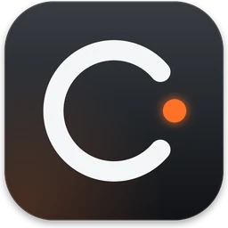
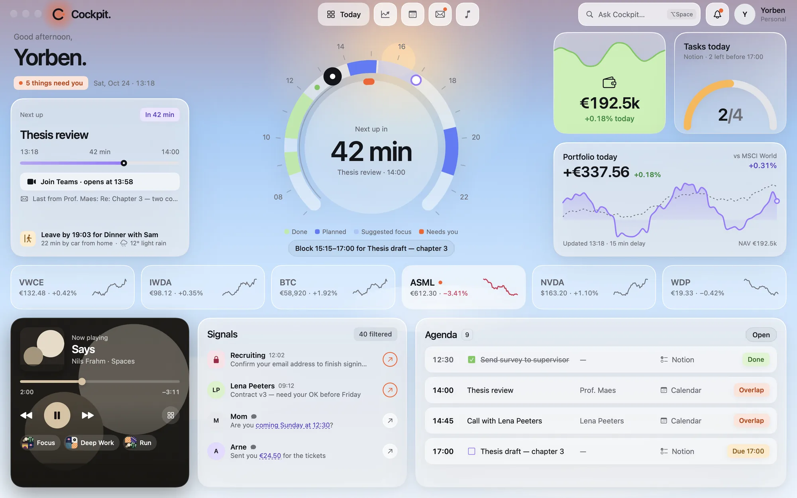
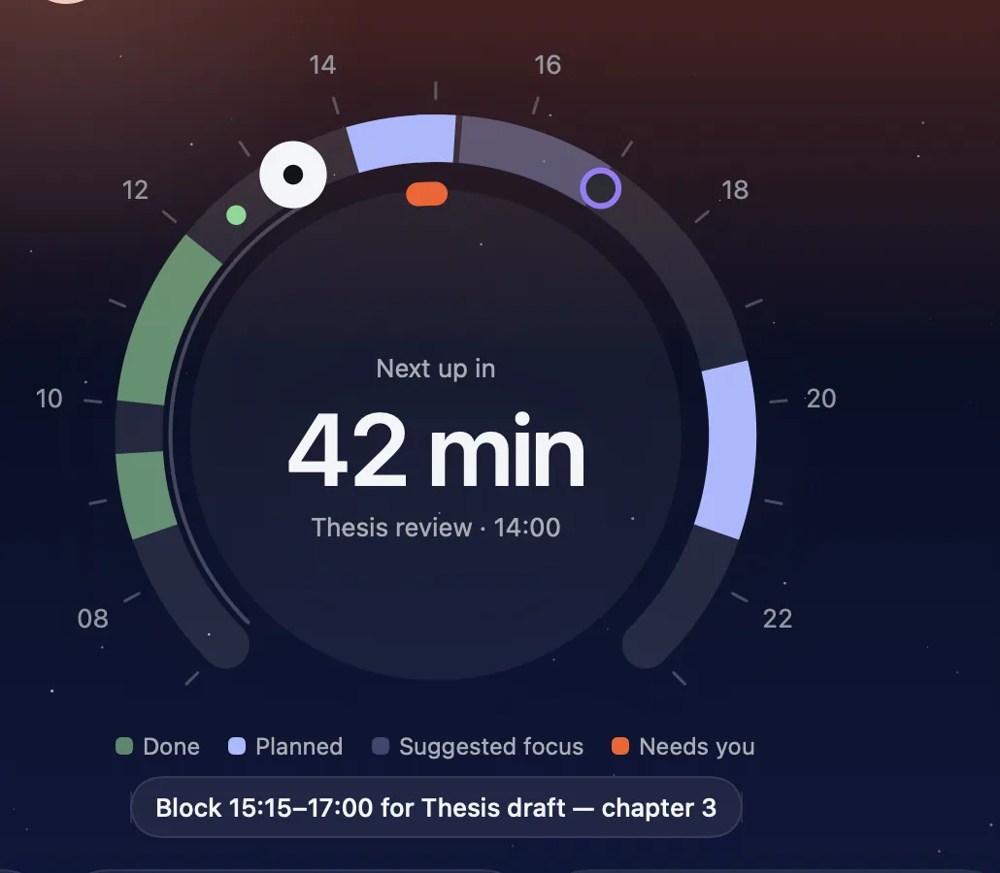
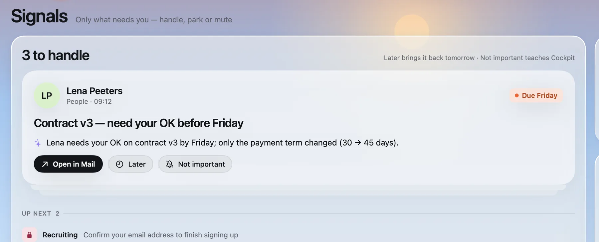
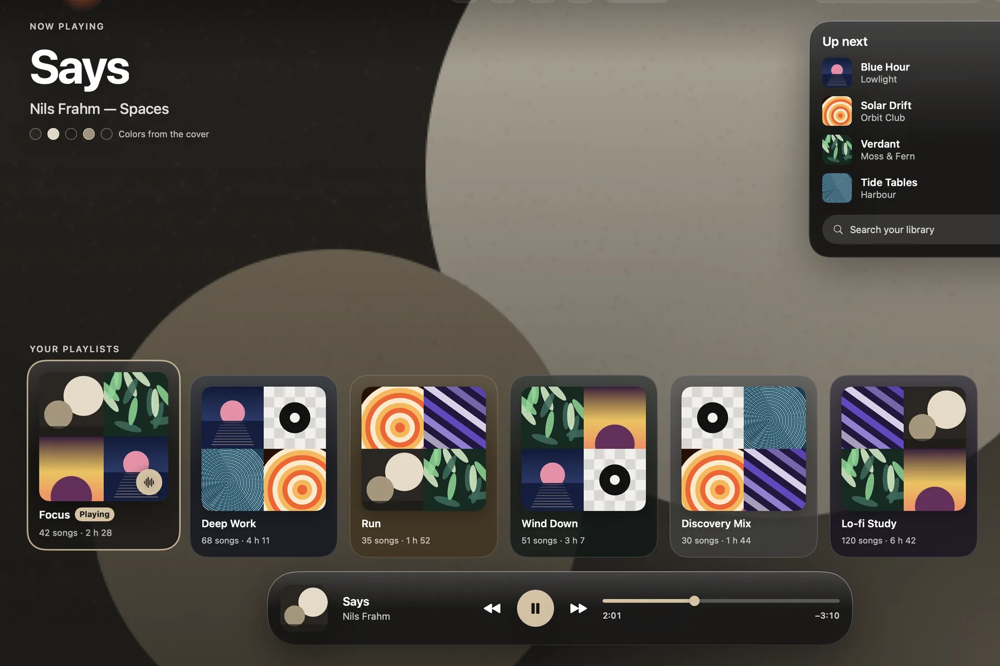
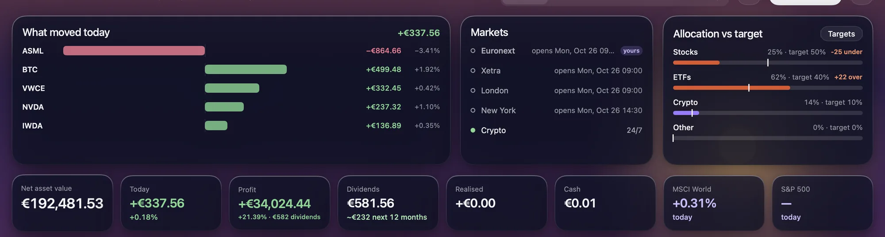

Cockpit
My whole day in one window.
Homebrew:

- A day dial. One ring shows what’s done, what’s planned and what needs me next.
- Signals, not inboxes. Mail and messages are sorted down to the few things that need a reply.
- One timeline. macOS Calendar and Notion tasks together, with clashes flagged.
- A window that follows the sky. Dawn, day, dusk and night looks change with the time.




Built with SwiftUI, EventKit, the Notion API, Apple Music and Gemini.
Next: Cairn